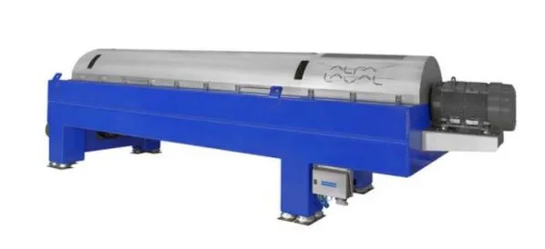

Engineered for the most demanding separation tasks in the drilling industry, oil and gas recovery and bulk solids treatment. Rugged, reliable and built for extreme environments.
The Alfa Laval Lynx series is a line of robust decanter centrifuges engineered to handle extremely high loads of abrasive solids. Known for their durability and high G-force separation performance, the Lynx series (including Lynx 20, 300, 400, and 1000) is the industry standard for drilling mud control and heavy industrial dewatering.
Featuring advanced Direct Drive technology and a slender bowl design for high length-to-diameter ratios, Lynx centrifuges deliver higher torque and superior separation results, even when dealing with variable feed conditions and very fine particles.

Advanced Direct Drive gearboxes provide precise control of differential speed, maximizing solids throughput and cake dryness.
All-stainless steel wetted parts with FlightGuard and SolidsGuard for maximum protection against eroding abrasive solids.
Engineered for high-volume flows and fine particle removal, allowing for high drilling fluid recovery and wastewater clarify.
Where the standard ALDEC decanter reaches its limits:
Built for the drilling floor and the industrial yard. Talk to our application engineers about deploying the Lynx range.